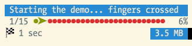

Progress Bar¶
When executing longer-running commands, it may be helpful to show progress information, which updates as your command runs:
To display progress details, use the
ProgressBar, pass it a total
number of units, and advance the progress as the command executes:
use Symfony\Component\Console\Helper\ProgressBar;
// creates a new progress bar (50 units)
$progressBar = new ProgressBar($output, 50);
// starts and displays the progress bar
$progressBar->start();
$i = 0;
while ($i++ < 50) {
// ... do some work
// advances the progress bar 1 unit
$progressBar->advance();
// you can also advance the progress bar by more than 1 unit
// $progressBar->advance(3);
}
// ensures that the progress bar is at 100%
$progressBar->finish();
Tip
You can also regress the progress bar (i.e. step backwards) by calling
$progress->advance() with a negative value. For example, if you call
$progress->advance(-2) then it will regress the progress bar 2 steps.
Instead of advancing the bar by a number of steps (with the
advance() method),
you can also set the current progress by calling the
setProgress() method.
Tip
If your platform doesn’t support ANSI codes, updates to the progress
bar are added as new lines. To prevent the output from being flooded,
use the minSecondsBetweenRedraws()
method to limit the number of redraws and the
setRedrawFrequency() method
to redraw every N iterations. By default, redraw frequency is
100ms or 10% of your max.
New in version 4.4: The minSecondsBetweenRedraws() and maxSecondsBetweenRedraws()
methods were introduced in Symfony 4.4.
If you don’t know the exact number of steps in advance, set it to a reasonable
value and then call the setMaxSteps() method to update it as needed:
// start with a 50 units progressbar
$progressBar = new ProgressBar($output, 50);
// a complex task has just been created: increase the progressbar to 200 units
$progressBar->setMaxSteps(200);
Another solution is to omit the steps argument when creating the
ProgressBar instance:
$progressBar = new ProgressBar($output);
The progress will then be displayed as a throbber:
1 2 3 4 5 6 7 8 9 | # no max steps (displays it like a throbber)
0 [>---------------------------]
5 [----->----------------------]
5 [============================]
# max steps defined
0/3 [>---------------------------] 0%
1/3 [=========>------------------] 33%
3/3 [============================] 100%
|
Whenever your task is finished, don’t forget to call
finish() to ensure
that the progress bar display is refreshed with a 100% completion.
Note
If you want to output something while the progress bar is running,
call clear() first.
After you’re done, call
display()
to show the progress bar again.
If the progress information is stored in an iterable variable (such as an array
or a PHP generator) you can use the
iterate() method,
which starts, advances and finishes the progress bar automatically:
use Symfony\Component\Console\Helper\ProgressBar;
$progressBar = new ProgressBar($output);
// $iterable can be array
$iterable = [1, 2];
foreach ($progressBar->iterate($iterable) as $value) {
// ... do some work
}
// or a generator
function iterable() { yield 1; yield 2; ... };
foreach ($progressBar->iterate(iterable()) as $value) {
// ... do some work
}
The previous code will output:
1 2 3 | 0/2 [>---------------------------] 0%
1/2 [==============>-------------] 50%
2/2 [============================] 100%
|
New in version 4.3: The iterate() method was introduced in Symfony 4.3.
Customizing the Progress Bar¶
Built-in Formats¶
By default, the information rendered on a progress bar depends on the current
level of verbosity of the OutputInterface instance:
1 2 3 4 5 6 7 8 9 10 11 12 13 14 15 16 17 18 19 | # OutputInterface::VERBOSITY_NORMAL (CLI with no verbosity flag)
0/3 [>---------------------------] 0%
1/3 [=========>------------------] 33%
3/3 [============================] 100%
# OutputInterface::VERBOSITY_VERBOSE (-v)
0/3 [>---------------------------] 0% 1 sec
1/3 [=========>------------------] 33% 1 sec
3/3 [============================] 100% 1 sec
# OutputInterface::VERBOSITY_VERY_VERBOSE (-vv)
0/3 [>---------------------------] 0% 1 sec/1 sec
1/3 [=========>------------------] 33% 1 sec/1 sec
3/3 [============================] 100% 1 sec/1 sec
# OutputInterface::VERBOSITY_DEBUG (-vvv)
0/3 [>---------------------------] 0% 1 sec/1 sec 1.0 MB
1/3 [=========>------------------] 33% 1 sec/1 sec 1.0 MB
3/3 [============================] 100% 1 sec/1 sec 1.0 MB
|
Note
If you call a command with the quiet flag (-q), the progress bar won’t
be displayed.
Instead of relying on the verbosity mode of the current command, you can also
force a format via setFormat():
$progressBar->setFormat('verbose');
The built-in formats are the following:
normalverbosevery_verbosedebug
If you don’t set the number of steps for your progress bar, use the _nomax
variants:
normal_nomaxverbose_nomaxvery_verbose_nomaxdebug_nomax
Custom Formats¶
Instead of using the built-in formats, you can also set your own:
$progressBar->setFormat('%bar%');
This sets the format to only display the progress bar itself:
1 2 3 | >---------------------------
=========>------------------
============================
|
A progress bar format is a string that contains specific placeholders (a name
enclosed with the % character); the placeholders are replaced based on the
current progress of the bar. Here is a list of the built-in placeholders:
current: The current step;max: The maximum number of steps (or 0 if no max is defined);bar: The bar itself;percent: The percentage of completion (not available if no max is defined);elapsed: The time elapsed since the start of the progress bar;remaining: The remaining time to complete the task (not available if no max is defined);estimated: The estimated time to complete the task (not available if no max is defined);memory: The current memory usage;message: used to display arbitrary messages in the progress bar (as explained later).
For instance, here is how you could set the format to be the same as the
debug one:
$progressBar->setFormat(' %current%/%max% [%bar%] %percent:3s%% %elapsed:6s%/%estimated:-6s% %memory:6s%');
Notice the :6s part added to some placeholders? That’s how you can tweak
the appearance of the bar (formatting and alignment). The part after the colon
(:) is used to set the sprintf format of the string.
Instead of setting the format for a given instance of a progress bar, you can also define global formats:
ProgressBar::setFormatDefinition('minimal', 'Progress: %percent%%');
$progressBar = new ProgressBar($output, 3);
$progressBar->setFormat('minimal');
This code defines a new minimal format that you can then use for your
progress bars:
1 2 3 | Progress: 0%
Progress: 33%
Progress: 100%
|
Tip
It is almost always better to redefine built-in formats instead of creating new ones as that allows the display to automatically vary based on the verbosity flag of the command.
When defining a new style that contains placeholders that are only available
when the maximum number of steps is known, you should create a _nomax
variant:
ProgressBar::setFormatDefinition('minimal', '%percent%% %remaining%');
ProgressBar::setFormatDefinition('minimal_nomax', '%percent%%');
$progressBar = new ProgressBar($output);
$progressBar->setFormat('minimal');
When displaying the progress bar, the format will automatically be set to
minimal_nomax if the bar does not have a maximum number of steps like in
the example above.
Tip
A format can contain any valid ANSI codes and can also use the Symfony-specific way to set colors:
ProgressBar::setFormatDefinition(
'minimal',
'<info>%percent%</info>\033[32m%\033[0m <fg=white;bg=blue>%remaining%</>'
);
Note
A format can span more than one line; that’s very useful when you want to display more contextual information alongside the progress bar (see the example at the beginning of this article).
Bar Settings¶
Among the placeholders, bar is a bit special as all the characters used
to display it can be customized:
// the finished part of the bar
$progressBar->setBarCharacter('<comment>=</comment>');
// the unfinished part of the bar
$progressBar->setEmptyBarCharacter(' ');
// the progress character
$progressBar->setProgressCharacter('|');
// the bar width
$progressBar->setBarWidth(50);
Caution
For performance reasons, Symfony redraws screen every 100ms. If this is too
fast or to slow for your application, use the methods
minSecondsBetweenRedraws() and
maxSecondsBetweenRedraws():
$progressBar = new ProgressBar($output, 50000);
$progressBar->start();
// this redraws the screen every 100 iterations, but sets additional limits:
// don't redraw slower than 200ms (0.2) or faster than 100ms (0.1)
$progressBar->setRedrawFrequency(100);
$progressBar->maxSecondsBetweenRedraws(0.2);
$progressBar->minSecondsBetweenRedraws(0.1);
$i = 0;
while ($i++ < 50000) {
// ... do some work
$progressBar->advance();
}
New in version 4.4: The minSecondsBetweenRedraws and maxSecondsBetweenRedraws() methods
were introduced in Symfony 4.4.
Custom Placeholders¶
If you want to display some information that depends on the progress bar
display that are not available in the list of built-in placeholders, you can
create your own. Let’s see how you can create a remaining_steps placeholder
that displays the number of remaining steps:
ProgressBar::setPlaceholderFormatterDefinition(
'remaining_steps',
function (ProgressBar $progressBar, OutputInterface $output) {
return $progressBar->getMaxSteps() - $progressBar->getProgress();
}
);
Custom Messages¶
Progress bars define a placeholder called message to display arbitrary
messages. However, none of the built-in formats include that placeholder, so
before displaying these messages, you must define your own custom format:
ProgressBar::setFormatDefinition('custom', ' %current%/%max% -- %message%');
$progressBar = new ProgressBar($output, 100);
$progressBar->setFormat('custom');
Now, use the setMessage() method to set the value of the %message%
placeholder before displaying the progress bar:
// ...
$progressBar->setMessage('Start');
$progressBar->start();
// 0/100 -- Start
$progressBar->setMessage('Task is in progress...');
$progressBar->advance();
// 1/100 -- Task is in progress...
Messages can be combined with custom placeholders too. In this example, the
progress bar uses the %message% and %filename% placeholders:
ProgressBar::setFormatDefinition('custom', ' %current%/%max% -- %message% (%filename%)');
$progressBar = new ProgressBar($output, 100);
$progressBar->setFormat('custom');
The setMessage() method accepts a second optional argument to set the value
of the custom placeholders:
// ...
// $files = ['client-001/invoices.xml', '...'];
foreach ($files as $filename) {
$progressBar->setMessage('Importing invoices...');
$progressBar->setMessage($filename, 'filename');
$progressBar->advance();
// 2/100 -- Importing invoices... (client-001/invoices.xml)
}
Displaying Multiple Progress Bars¶
When using Console output sections it’s possible to display multiple progress bars at the same time and change their progress independently:
$section1 = $output->section();
$section2 = $output->section();
$progress1 = new ProgressBar($section1);
$progress2 = new ProgressBar($section2);
$progress1->start(100);
$progress2->start(100);
$i = 0;
while (++$i < 100) {
$progress1->advance();
if ($i % 2 === 0) {
$progress2->advance(4);
}
usleep(50000);
}
After a couple of iterations, the output in the terminal will look like this:
1 2 | 34/100 [=========>------------------] 34%
68/100 [===================>--------] 68%
|